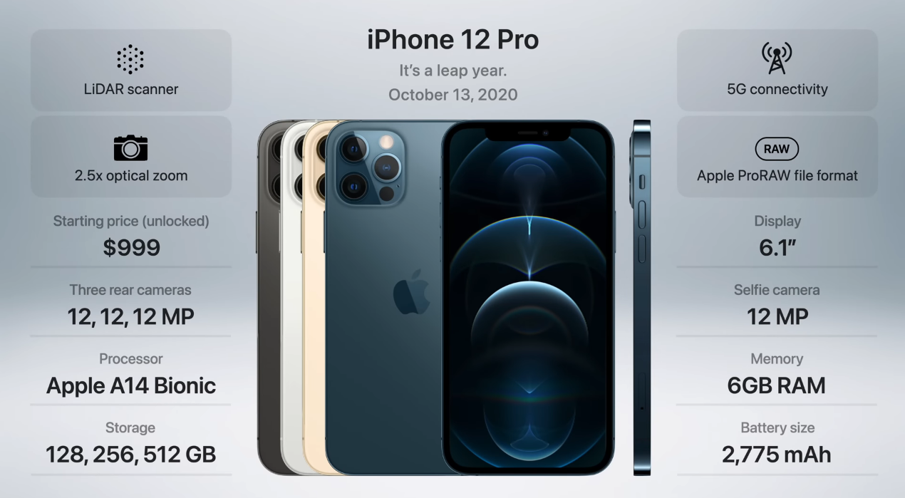
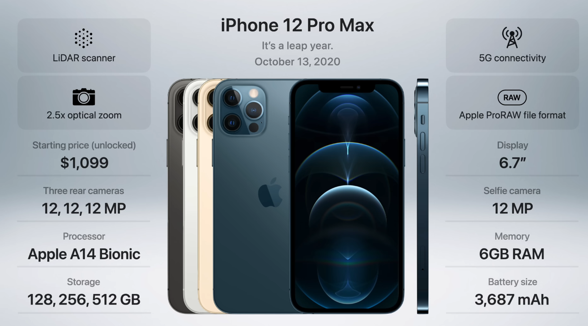

Generation 16.2: iPhone 12 Pro and iPhone 12 Pro Max
Release Date: October 13, 2020
Apple released four new iPhones in 2020: the iPhone 12, iPhone 12 mini, iPhone 12 Pro, and iPhone 12 Pro Max. The iPhone 12 Pro and iPhone 12 Pro Max are the higher-end models, and they have a number of features that the iPhone 12 and iPhone 12 mini do not have. One of the biggest differences between the iPhone 12 Pro and iPhone 12 Pro Max is the camera. The iPhone 12 Pro has a triple-lens rear camera system, while the iPhone 12 Pro Max has a quad-lens rear camera system. The iPhone 12 Pro Max also has a larger sensor in its main camera, which allows it to take better photos in low-light conditions. The iPhone 12 Pro and iPhone 12 Pro Max also have a LiDAR scanner, which is a new sensor that can be used for augmented reality (AR) applications. The LiDAR scanner allows the iPhone to measure the distance between itself and objects in the real world, which can be used to create more realistic AR experiences. The iPhone 12 Pro and iPhone 12 Pro Max also have a stainless steel frame, while the iPhone 12 and iPhone 12 mini have an aluminum frame. The stainless steel frame is more durable than the aluminum frame, and it gives the iPhone 12 Pro and iPhone 12 Pro Max a more premium look and feel. Overall, the iPhone 12 Pro and iPhone 12 Pro Max are the more powerful and feature-rich iPhones of the 2020 lineup. They are a good option for people who want the best possible iPhone experience.
 